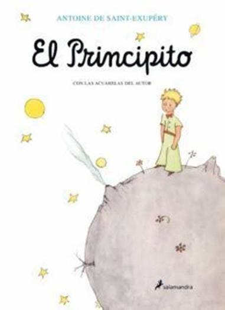

don quijote de la mancha
Don Quijote de la Mancha fue escrito por el español Miguel de Cervantes.
La primera parte se publicó en 1605 y la segunda en 1615.
La obra cuenta la historia de Alonso Quijano, quien se convierte en Don Quijote.
Inspirado por los libros de caballería, emprende aventuras junto a su escudero Sancho Panza.
Don Quijote es considerada una de las obras más importantes de la literatura universal.
Ayudó al desarrollo de la novela moderna y enriqueció la lengua española.
También presenta reflexiones sobre la libertad, la justicia, la amistad y los sueños.
Además, permite conocer y cuestionar las costumbres y problemas de la sociedad de su época.

el principito
El Principito fue escrito por el escritor y aviador francés Antoine de Saint-Exupéry.
Fue publicado por primera vez en 1943, en Nueva York, durante la Segunda Guerra Mundial.
La historia cuenta el encuentro entre un piloto y un pequeño príncipe que viene de otro planeta.
A través de sus viajes, el Principito conoce diferentes personajes y aprende sobre la vida y las relaciones.
El Principito transmite importantes enseñanzas sobre la amistad, el amor y la responsabilidad.
También invita a valorar las cosas esenciales de la vida y a mirar más allá de las apariencias.
La obra ha sido traducida a numerosos idiomas y es leída por personas de diferentes edades.
Además, fomenta valores como la empatía, la imaginación y el respeto hacia los demás.

las cronicas de una muerte anunciada
Crónica de una muerte anunciada fue escrita por el colombiano Gabriel García Márquez.
Fue publicada en 1981 y está inspirada en un hecho real ocurrido en Colombia.
La novela narra el asesinato de Santiago Nasar, anunciado desde el comienzo de la historia.
A través de diferentes testimonios, se reconstruyen los acontecimientos que llevaron a su muerte.
La obra muestra temas como el honor, la violencia, la culpa y la responsabilidad colectiva.
También critica las costumbres sociales que pueden llevar a las personas a cometer injusticias.
García Márquez utiliza una narración parecida a una investigación periodística para contar la historia.
La novela contribuyó al reconocimiento de la literatura latinoamericana y del realismo mágico.
.jpg)